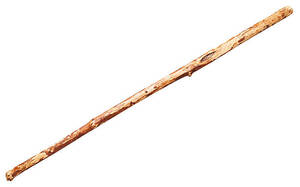

ϩ(ⲉ)ⲣⲃⲱⲧ, ϩⲉⲣⲃⲟⲟⲑⲉ (sic MS) S, ⲁⲣⲃⲟⲧ, -ⲱⲧ B nn f S m B, staff, wand: Z 339 S moved it ⲛⲧⲉϥϩ. βαινὴ ῥάβδος (cf ϣⲃⲱⲧ); ib 340 S monk walking ⲉⲣⲉⲧⲉϥϩ. ⲛⲧⲟⲟⲧϥ, Miss 4 712 S ⲕⲟⲩⲓ ⲛϩ. in his hand, R 1 2 32 S ⲉϥⲧⲁϫⲣⲏⲩ ⲉϫⲛⲧⲉϥϩ., Mor 51 37 S ϩⲉⲛⲕⲉⲗⲉⲉⲗⲉ & ϩⲉⲛϩ. ⲙⲡⲁϫⲕⲡⲁϩⲟⲩ broad-backed staves for fighting, RAl 92 B ⲁϥϭⲓ ⲙⲡⲉϥⲁⲣⲃⲱⲧ ⲁϥⲙⲟϣⲓ ⲉⲃⲟⲗ, Montp 173 B ⲡⲓⲃⲏⲧ, ⲡⲓⲃⲁⲓ, ⲛⲓⲁⲣⲃⲱⲧ جريد, AZ 25 106 S ⲟⲩϩⲉⲣⲃⲟⲟⲑⲉ ⲉⲧⲗⲏⲕ for stirring; K 126 B among weaver's tools ⲛⲓⲁⲣⲃⲱⲧ كسور cylinders for winding (Lab); ib 133 B parts of ship ⲡⲓⲁⲣⲃⲟⲧ جاغوص (sic MSS) beam staying sides of ship apart (BIF 20 60), prop supporting mast (Lab).
(noun)
tool
f S, m B, staff, wand

complete
15a
ⲁⲣⲃⲟⲧ, ⲁⲣⲃⲱⲧ B v ϩⲣⲃⲱⲧ.
702a
See also:
Homonyms:
| view | ϣⲃⲱⲧ SBF ϣⲃⲟⲧ S plural: ϣⲃⲁⲧⲉ S plural: ϣⲃⲟϯ B | (noun masculine) rod, staff [ραβδος, βακτηρια, σκηπτρον]648 |
| view | ⲟⲩⲣⲁⲥ S | (noun) staff, crutch [σκυταλη]1734 |
| view | ϭⲉⲣⲱⲃ SALF ϭⲉⲣⲱϥ S ϭⲁⲣⲱⲙ SfF ϭⲁⲣⲱⲡ B ϫⲁⲣⲱⲃ F plural: ϭⲉⲣⲟⲟⲃ SL plural: ϭⲉⲣⲱⲱⲃ S | (noun masculine) staff, rod [ραβδος, βακτηρια]811 |
Homonyms:
| view | ⲃⲁⲣⲱⲧ, ⲃⲁⲣⲟⲧ SABF plural: (?) ⲃⲁⲣⲁⲧⲉ S | (noun masculine) brass, bronze593 |